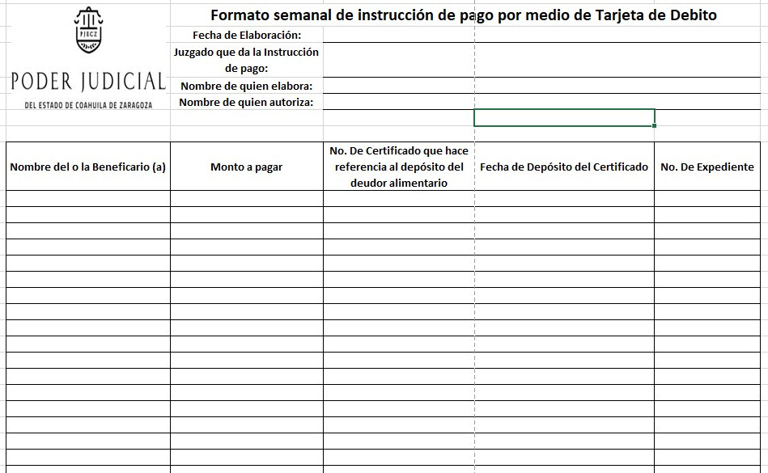

Key: AC20230119A
Consejero Presidente: Miguel Felipe Mery Ayup. Secretaria de Estudio y Cuenta: Erika Nohemí Hernández Dávila.
Resumen: En este acuerdo se decide la aprobación de la implementación de la modalidad de entrega de pensiones alimenticias a través de tarjeta de débito y se emiten lineamientos.
I. CONSIDERACIONES
1. Facultades del Pleno del Consejo de la Judicatura para la emisión del presente acuerdo
El Consejo de la Judicatura del Estado de Coahuila de Zaragoza, de conformidad con lo establecido en el numeral 143 de la Constitución Política del Estado de Coahuila de Zaragoza, es un órgano que tiene como funciones la administración, vigilancia y disciplina de los órganos jurisdiccionales.
De acuerdo al artículo 57, fracciones VIII y IX de la Ley Orgánica del Poder Judicial del Estado de Coahuila de Zaragoza, el Consejo de la Judicatura tiene las siguientes atribuciones: supervisar el funcionamiento de los órganos que integran al Poder Judicial y dictar las providencias necesarias para el mejoramiento de justicia; y expedir los acuerdos generales necesarios para regular el funcionamiento de los órganos del Poder Judicial del Estado de Coahuila de Zaragoza.
Asimismo, el artículo 2 del Reglamento para el Fondo para el Mejoramiento de la Administración de Justicia del Poder Judicial del Estado de Coahuila del Estado Libre y Soberano de Coahuila de Zaragoza ("en adelante Reglamento para el FMAJ"), dispone que el Fondo para el Mejoramiento de la Administración de Justicia, tiene como función resguardar y administrar los recursos materiales y económicos que por conceptos de depósitos de cauciones, multas, fianzas y garantías que establezcan las autoridades judiciales del Estado y cualquier otro órgano del Tribunal con facultad para ello.
De igual manera, el artículo 4 del Reglamento para el FMAJ estipula que el Fondo será administrado en forma autónoma e independiente por el Consejo de la Judicatura, de acuerdo a lo dispuesto por el Reglamento y la Ley Orgánica del Poder Judicial del Estado de Coahuila de Zaragoza.
De acuerdo al numeral 11 del Reglamento para el FMAJ el fondo está integrado por recursos propios y con recursos ajenos. El inciso b) de este precepto normativo refiere que son recursos ajenos afectos transitoriamente al Fondo los depósitos en efectivo, mediante la exhibición del certificado o billetes de depósito y que por disposición legal no se pueda disponer de ellos, sino mediante acuerdo de la autoridad judicial o del órgano del Tribunal facultado para ello.
En ese sentido, es un hecho notorio para este Consejo de la Judicatura tiene conocimiento que en la actualidad todavía gran número de personas deudoras alimentarias depositan en efectivo a través de certificado de depósito las pensiones alimenticias en favor de sus acreedoras y acreedores alimentarios. Por ende, dichas pensiones pasan a ser recursos ajenos del FMAJ.
De esta manera, de acuerdo al contexto normativo expuesto con antelación, el Consejo de la Judicatura es la autoridad facultada para emitir el presente acuerdo.
Por lo cual, el Consejo de la Judicatura del Estado de Coahuila de Zaragoza estima pertinente pronunciarse al respecto con la finalidad de proveer a las personas acreedoras alimentarias de un medio de cobro más sencillo, eficaz y directo, sin que exista la necesidad de acudir al juzgado y a la institución bancaria a cobrar la cantidad que por concepto de alimentos está autorizada dentro de un procedimiento judicial, esto con la finalidad de garantizar el acceso a la justicia pronto y expedito, así como mejorar desde luego la administración de justicia que ofrece este poder público.
2. Consideraciones para la implementación de la modalidad de entrega de pensiones alimenticias a través de tarjeta de débito (TEPA)
Ahora bien, este órgano colegiado refiere también que en la actualidad existen diversas formas de pago y cobro de las pensiones alimenticias que se autorizan en los órganos jurisdiccionales en materia familiar de este Poder Judicial del Estado de Coahuila de Zaragoza. Algunas de ellas son el descuento vía nómina a la persona deudora alimentaria o el depósito en alguna cuenta bancaria personal de las personas acreedoras alimentarias.
La que destaca en este contexto es la modalidad que consiste en que la persona deudora alimentaria deposite en forma de consignación en pago la cantidad que le corresponde, ante el juzgado que decretó la pensión alimenticia.
Ante ello, es necesario que de acuerdo al contexto actual en el que la sociedad demanda la implementación de procesos que sean sencillos, fáciles y accesibles, resulta pertinente que este Consejo de la Judicatura se pronuncie en relación a ello, autorizando la implementación de mecanismos que permitan a las personas acreedoras alimentarias tener un acceso rápido y sin demora a la cantidad que por concepto de pensión alimenticia tiene derecho.
2.1. Antecedentes
El Consejo de la Judicatura recuerda que de acuerdo al artículo 276 de la Ley Para la Familia del Estado de Coahuila de Zaragoza, se entiende por alimentos: la alimentación nutritiva, el vestido, la habitación, la atención médica y psicológica preventiva integrada a la salud, la asistencia médica y terapéutica en casos de enfermedad, los gastos relativos al embarazo y el parto, la recreación, así como los cuidados y asistencia que requiera el acreedor alimentario en lo particular. Respecto de las niñas y los niños los alimentos comprenden los gastos necesarios para la educación preescolar, primaria, secundaria y media superior del alimentista, su recreación y para proporcionarle algún oficio, arte o profesión adecuados a sus circunstancias personales.
De conformidad con el artículo 280 de la Ley para la Familia del Estado de Coahuila de Zaragoza, los alimentos han de ser proporcionales a la posibilidad del que debe darlos y a las necesidades del que debe recibirlos. Determinados por convenio o sentencia, los alimentos tendrán un incremento automático mínimo equivalente al aumento porcentual del salario mínimo general diario vigente en el Estado, salvo que el deudor alimentario demuestre que sus ingresos no aumentaron en igual proporción. En este caso, el incremento en los alimentos se ajustará al que realmente hubiese obtenido el deudor. Estas prevenciones deberán expresarse siempre en la sentencia o convenio correspondiente.
Cuando no sean comprobables el salario o los ingresos del deudor alimentario, la autoridad judicial competente resolverá con base en la capacidad económica del deudor y el nivel de vida que sus acreedores alimentarios hayan llevado en los dos últimos años.
Las juezas y los jueces familiares que en atención al principio de proporcionalidad que está previsto en la Ley Para la Familia del Estado de Coahuila de Zaragoza, decretan los alimentos en favor de las personas que tienen derecho a ellos.
Este Consejo de la Judicatura, refiere que en la actualidad, dentro de este poder público existen diversas formas de pago y cobro de la cantidad que por concepto de pensión alimenticia deben pagar las personas deudoras alimentarias.
En este contexto, el Consejo de la Judicatura recuerda la modalidad de pago a través de la exhibición de un certificado de depósito expedido por la propia autoridad judicial. Asimismo, esta cantidad no puede ser recibida por las personas acreedoras alimentarias, hasta en tanto la autoridad judicial no emita un acuerdo al respecto y esto se hace a través de un sistema que se creó por parte de la Oficialía Mayor del Poder Judicial.
Este certificado de depósito se expide por la cantidad y por el concepto según corresponda, en este caso, pensión alimenticia, y se paga en la institución bancaria.
Una vez que se expide el certificado de depósito el procedimiento que debe realizar la persona beneficiaria y el juzgado es el siguiente:
-
La persona beneficiaria solicita la devolución del dinero que le fue depositado.
-
Autoridad determina la devolución de los recursos.
-
El Juzgado solo si el certificado tiene estatus depositado y con cuentas de fondos ajenos civiles y familiares, procede a seleccionar el beneficiario e imprimir la orden de pago. El Sistema para el Control de Certificados de Depósito asigna el estatus de emitido a la orden de pago.
-
El juzgado solicita copia de Identificación del beneficiario. Recaba y coteja firma de recibido en la sección de las pólizas de la Orden de Pago. Entrega orden de pago al beneficiario. Anexa a expediente las secciones de las pólizas de la orden de pago.
-
La persona beneficiaria acude al banco a pagar. El banco captura y valida referencia impresa en la orden de pago.
La modalidad de pago y cobro descrito tienen efectuándose desde su implementación en el año 2008 hasta el día de hoy.
Quienes integran el Pleno del Consejo de la Judicatura estiman que esta modalidad de cobro puede llegar a ser tediosa, tardada y además en algunos de los casos pudiera existir la posibilidad de que las personas acreedoras alimentarias eroguen una parte de su pensión en el traslado a los órganos jurisdiccionales y a la institución bancaria para poder disponer del dinero al que son acreedores.
De esta manera, el Consejo de la Judicatura, con la finalidad de garantizar que las personas que son acreedoras a una pensión alimenticia tengan un acceso fácil, rápido y sobre todo acorde a las necesidades actuales, estima viable la implementación de la modalidad de entrega de la pensión alimenticia a través de tarjetas de débito.
2.2. Justificación para la implementación de la modalidad TEPA
El Consejo de la Judicatura tiene como objetivo principal mejorar la administración de justicia. Por lo cual, tiene la facultad de emitir las providencias que sean necesarias para garantizar que día con día la administración de justicia que presta este poder público sea de excelencia, de calidad, que sea oportuna y que se haga dentro de los plazos establecidos en la legislación, con la finalidad de garantizar a la ciudadanía coahuilense una tutela judicial efectiva.
El Consejo de la Judicatura refiere que la labor diaria de los funcionarios que trabajan en el Poder Judicial del Estado de Coahuila de Zaragoza se realiza siempre en favor de la ciudadanía, procurando en todo momento que las y los usuarios de este poder público tengan acceso a la justicia.
El acceso a la justicia es un principio básico del estado de derecho y es un derecho humano reconocido en la Constitución Política de los Estados Unidos Mexicanos en el artículo 17, y es el derecho de toda persona de hacer valer jurisdiccionalmente una acción respecto de un derecho que estime violado. Asimismo, es el derecho de acceder a procesos ágiles y garantistas para obtener justicia pronta y cumplida, es decir que sea de calidad y además que sea pronto y oportuna.
El acceso a la justicia debe ser garantizado por las autoridades administradoras de justicia quienes tienen como obligación emprender las acciones necesarias para asegurar que todas las personas sujetas a su jurisdicción estén en condiciones de ejercer y de gozar los derechos humanos.
En ese sentido, tomando en cuenta lo antes expuesto, es de destacarse que las personas acreedoras alimentarias, como todas las personas, tienen el derecho de que se les administre justicia de manera pronta, expedita, imparcial y de calidad.
Las personas acreedoras alimentarias son aquellas a las que por tener un derecho reconocido expesamente en la ley, un juez decretó en su favor el pago de una pensión alimenticia a cargo de la persona que legalmente está obligada para ello.
Es por ello, que el Consejo de la Judicatura tiene a bien recordar que el Consejero Presidente durante su gestión ha impulsado un nuevo modelo de gestión judicial que tenga por objetivo garantizar a las personas usuarias, el acceso a la justicia y la tutela judicial efectiva. Esto a través de un sistema de justicia que tenga como eje central la justicia digital.
De igual manera, el Consejo de la Judicatura reconoce que el Consejero Presidente ha impulsado también un modelo de justicia que sea cercano con la ciudadanía, mediante el cual se creen vínculos que permitan establecer relaciones de confianza.
El Consejo de la Judicatura, recuerda que los tiempos actuales demandan nuevos procesos. Procesos que sean sencillos, modernos, disponibles, automáticos y de fácil acceso.
La justicia se encuentra diariamente en constante cambio. La justicia se moderniza con el uso de herramientas tecnológicas e implementando métodos modernos, rápidos, sencillos y sobre todo eficaces que faciliten a las usuarias y los usuarios tener acceso a los servicios y procesos que se ofrecen.
De acuerdo a los datos estadísticos proporcionados por los órganos jurisdiccionales tan solo en el año 2022 se recibieron en el Poder Judicial del Estado de Coahuila de Zaragoza, más de 22,000 demandas familiares, de las cuales 3 mil son solicitudes de pensión alimenticia.
Según información de la Oficialía Mayor, mensualmente se expiden por este concepto más de 400 certificados de depósito.
Bajo esa orden de pensamiento, quienes integran el Pleno del Consejo de la Judicatura, refieren que resulta idóneo implementar una nueva modalidad de entrega de las pensiones alimenticias.
Lo anterior tomando en consideración que, efectivamente en concordancia con el nuevo modelo de gestión judicial y lo establecido en el artículo 154 de la Constitución Política del Estado de Coahuila de Zaragoza, en donde se prevé un sistema de justicia digital confiable y un debido procedimiento bajo el principio de antiformalismo, mediante el cual busca sobre todo garantizar el acceso a la justicia a las personas la implementación de mecanismos digitales que resulten idóneos para facilitar los procesos que permitan automatizar la entrega de la pensión alimenticia.
El Consejero Presidente en coordinación con la Oficialía Mayor del Poder Judicial del Estado, ha venido gestionando que a las personas beneficiarias de las pensiones alimenticias se les entregue la cantidad que reciben por este concepto, a través de una modalidad que resulte menos tediosa y burocrática. En conclusión, una modalidad que permita automatizar la entrega de las pensiones alimenticias.
De tal forma que después de un análisis exhaustivo, se estima que la mejor forma de evitar que las personas sigan acudiendo a los juzgados y posteriormente a la institución bancaria a cobrar su dinero es la tramitación de una tarjeta de débito ante la institución bancaria Banco Santander México S.A., Institución de Banca Múltiple, Grupo Financiero Santander México (en adelante “Santander”). Así, las personas beneficiarias tendrán el dinero a su disposición mediante retiro en alguno de los cajeros automáticos, en ventanilla o incluso al realizar pagos directos hasta por el monto disponible, en establecimiento comerciales con terminal bancaria.
Además de lo anterior, esta institución bancaria resultó ser la que mejores beneficios otorgaba pues al aperturar una cuenta en dicha institución bancaria las personas beneficiarias contarán con lo siguiente:
a) Asistencia funeraria sin costo. b) Al pagar con tu tarjeta recibes cash back: 1% en gasolineras, 2% en restaurantes y entretenimiento y 3% en farmacias. c) Seguro de vida por $100,000.00 (cien mil pesos 00/100 moneda nacional). d) Asistencia telefónica médica, dental, psicológica y legal. e) Sin comisiones por apertura, manejo de cuenta o saldo mínimo. f) Banda digital sin costo. g) Retiro en efectivo en más de 16,800 sitios.
Es por ello que el Consejo de la Judicatura refiere que es viable y de acuerdo a las políticas que se han venido implementando en relación a la modernización y automatización en los trámites a favor de la ciudadanía, implementar la modalidad de entrega de pensiones alimenticias a través de una tarjeta bancaria que sea de débito y que se expida por Santander.
Esto permitirá a las personas recibir su pensión de manera automática y sin la necesidad de acudir al juzgado para realizar las gestiones de entrega del dinero correspondiente.
La implementación de este método de entrega no es contrario a la ley ya que en la Ley Para la Familia del Estado de Coahuila de Zaragoza, el Código de Procedimientos Familiares para el Estado de Coahuila de Zaragoza y en el Código Procesal Civil para el Estado de Coahuila de Zaragoza, no está regulado de manera específica el método de entrega de este tipo de pagos. Por lo que se deja a la autoridad local y a la autoridad judicial la regulación de estas modalidades de entrega.
De esta forma no existe un precepto legal que impida la implementación del método de entrega de pensiones alimenticias a través de tarjeta de débito.
Es pertinente hacer una interpretación evolutiva tomando en cuenta las normas que existen en las legislaciones mencionadas, resaltando los constantes cambios que existen y las herramientas tecnológicas con las que actualmente se cuenta. De ahí que esta propuesta resulta viable y jurídicamente sustentada.
El Consejo de la Judicatura constata que los actores estratégicos en esta nueva modalidad son además de este órgano colegiado, los órganos jurisdiccionales que conocen de la entrega de pensiones alimenticias y la Oficialía Mayor del Poder Judicial del Estado de Coahuila de Zaragoza.
La entrega de pensiones alimenticias a través de una tarjeta de débito es un gran paso en el avance importante en los procesos de entrega de pensiones alimenticias. Además, es una de las tantas acciones que el Consejero Presidente ha gestionado para seguir sin descenso hacia el camino de una justicia digital, cercana, moderna y de calidad.
Cabe precisar que esta modalidad beneficiará a las personas acreedoras alimentarias, de forma que el juzgado que conozca de asuntos de alimentos será un intermediario para que las personas puedan recibir su pensión en la tarjeta de débito. Esto es así porque el dinero seguirá ingresando a los recursos ajenos del Fondo para el Mejoramiento para la Administración de Justicia a través de los certificados de depósito que se seguirán expidiendo en los juzgados a través del Sistema para el Control de Certificados de Depósito.
Para ello se designará una persona administradora que labore en la Oficialía Mayor del Poder Judicial del Estado de Coahuila de Zaragoza y una persona que sea el enlace con dicha dependencia. La persona administradora y la persona enlace serán actores fundamentales en esta modalidad, pues a través de ellos se hará posible la materialización de la entrega del dinero.
2.3. Lineamientos en el uso de la modalidad de entrega por tarjetas de débito de pensión alimenticia
El Consejo de la Judicatura estima pertinente regular la modalidad de entrega de pensión alimenticia por tarjeta de débito (TEPA). Pues es importante que existan lineamientos en los que se establezcan las reglas de su uso y en los que queden precisados con seguridad y certeza los derechos y obligaciones que tendrán tanto las autoridades como las personas usuarias. Por tal motivo, el Consejo propone que tal modalidad se regule los lineamientos siguientes:
LINEAMIENTOS EN EL USO DE LA MODALIDAD DE ENTREGA POR TARJETA DE DÉBITO DE PENSIÓN ALIMENTICIA
Capítulo I Disposiciones generales
Artículo 1. Los presentes lineamientos son de observancia obligatoria para las personas que accedan voluntariamente a la modalidad de entrega de pensión alimenticia por tarjeta de débito y para los órganos del Poder Judicial del Estado de Coahuila de Zaragoza. Tienen por objeto regular la implementación de la modalidad de entrega de la pensión alimenticia por tarjeta de débito.
Artículo 2. Para la aplicación de los lineamientos se deberán observar los principios de tutela judicial efectiva, antiformalismo, razonabilidad, e igualdad y no discriminación. En todo caso, las reglas de aplicarán con perspectiva de derechos humanos y de género. La interpretación de estos lineamientos se deberá hacer de forma evolutiva y sistemática, procurando la eficiencia, la rapidez y la prontitud para el acceso a la justicia. Artículo 3. Para los efectos de los presentes lineamientos se entenderá por:
I. Consejo de la Judicatura: El Consejo de la Judicatura del Estado de Coahuila de Zaragoza.
II. Oficialía Mayor: La Oficialía Mayor del Poder Judicial del Estado de Coahuila de Zaragoza.
III. Juzgados: Órganos jurisdiccionales que autorizaron el pago de una pensión alimenticia.
IV. Modalidad TEPA: Modalidad de entrega de pensión alimenticia en tarjeta de débito. V. Persona administradora TEPA: Persona analista financiera que al efecto designe la Oficialía Mayor para la operación de la modalidad TEPA.
VI. Enlace TEPA: Persona designada por los órganos jurisdiccionales para la operación de la modalidad TEPA.
VII. Secretaría Técnica: Secretaría Técnica y de Transparencia de la Presidencia del Tribunal Superior de Justicia del Estado de Coahuila de Zaragoza.
VIII. Dirección de Recursos Financieros: Dirección de Recursos Financieros de la Oficialía Mayor del Poder Judicial del Estado de Coahuila de Zaragoza.
IX. Personas acreedoras alimentarias: Aquellas personas que por tener un derecho reconocido en la ley un juez competente decretó en su favor el pago de un porcentaje por concepto de pensión alimenticia.
X. Personas deudoras alimentarias: Aquellas personas que por tener la obligación de otorgar alimentos, un juez decreta en su contra el pago de un porcentaje por concepto de pensión alimenticia.
XI. Representante legal de la persona acreedora alimentaria: La persona que represente legalmente a que requiera de representación para el ejercicio de su capacidad jurídica.
XII. Santander: Institución bancaria en la que se entregará el pago por concepto de pensión alimenticia a las personas acreedoras alimentarias.
Artículo 4. Lo relativo a la solicitud de expedición de certificado de depósito ante los juzgados y el pago de la pensión alimenticia con la institución bancaria que corresponda, se seguirá rigiendo de conformidad con las disposiciones legales aplicables.
Capítulo II Registro a la modalidad TEPA
Artículo 5. Podrán acceder a esta modalidad TEPA todas las personas acreedoras alimentarias ya sea por sí, o por medio de sus representantes, según corresponda conforme a las disposiciones legales aplicables.
La inscripción a la modalidad TEPA será voluntaria y opcional para las personas acreedoras alimentarias.
La incorporación a la modalidad TEPA se realizará mediante un registro de inscripción. Este registro se efectuará a través del sitio web oficial del Poder Judicial del Estado de Coahuila de Zaragoza.
Artículo 6. El registro para la inscripción a la modalidad TEPA se hará de forma electrónica y las personas acreedoras alimentarias o sus representantes legales deberán contar con los siguientes datos:
I. Nombre completo.
II. Correo electrónico. III. R.F.C.
IV. C.U.R.P.
V. Juzgado donde le realizan el pago de pensión.
VI. Número de expediente en donde se decretó la pensión.
VII. Teléfono y compañía celular.
VIII. Domicilio particular.
IX. Archivo PDF de su credencial de elector por ambos lados.
X. Archivo PDF del comprobante de domicilio no mayor a tres meses.
XI. Archivo JPEG con la Autorización de Transferencia de Datos Personales con su firma autógrafa
Artículo 7. El registro para la incorporación a la modalidad TEPA tendrá como fecha de inicio el 23 de enero de 2023.
Artículo 8. La Oficialía Mayor en coordinación con la Secretaría Técnica deberá difundir a través de los medios de comunicación que considere pertinentes la implementación de la modalidad TEPA. La finalidad de esta difusión es que todas las personas acreedoras alimentarias conozcan esta nueva modalidad de entrega.
Artículo 9. Asimismo, el Consejo de la Judicatura emitirá una circular mediante la cual se informe a la ciudadanía la entrada en vigor de la implementación de la modalidad TEPA. Esta circular deberá colocarse por parte del personal del Poder Judicial del Estado de Coahuila de Zaragoza en un lugar visible en todos los órganos jurisdiccionales y no jurisdiccionales del Poder Judicial del Estado de Coahuila de Zaragoza.
Para efectos de estos lineamientos, se entiende por entrada en vigor de la implementación de la modalidad TEPA, el registro por parte de las personas acreedoras alimentarias, la aceptación de la institución bancaria, la notificación de entrega para la recepción de la tarjeta de débito correspondiente, así como el uso de esta modalidad.
Artículo 10. El listado de personas acreedoras alimentarias que se inscriban a la modalidad TEPA estará bajo el resguardo de la Oficialía Mayor a través de la Dirección de Recursos Financieros y la persona administradora TEPA.
Una vez que las personas se inscriban a la modalidad TEPA, la Oficialía Mayor entregará los datos de las personas acreedoras alimentarias o sus representantes legales a Santander, quien emitirá una lista definitiva de las personas que podrán incorporarse a esta modalidad.
De igual manera, la lista definitiva de personas que podrán incorporarse a la modalidad TEPA será dada a conocer por la Dirección de Recursos Financieros al Consejo de la Judicatura.
El Consejo de la Judicatura una vez que reciba la información respectiva dará a conocer a los juzgados de primera instancia en materia familiar la lista de personas inscritas a la modalidad TEPA que corresponda a cada uno.
Capítulo III Obligaciones de quienes operan e intervienen en la modalidad TEPA
Artículo 11. La Oficialía Mayor deberá informar a las personas acreedoras alimentarias o sus representantes legales en un plazo no mayor a 10 días a la inscripción en el portal, el día fecha y hora y el juzgado en la que pueden recoger su tarjeta bancaria.
Artículo 12. El personal de Santander será quien entregue las tarjetas bancarias y orientará a las personas acreedoras alimentarias sus representantes legales sobre el uso de la tarjeta que le corresponda.
Artículo 13. La Dirección de Recursos Financieros contará con una persona administradora de la modalidad TEPA. Esta persona administradora será designada por la Oficialía Mayor y tendrá las siguientes obligaciones:
I. Tener bajo su resguardo la lista de personas inscritas a la modalidad TEPA.
II. Tener bajo su resguardo la información de los depósitos que se harán a la cuenta del Poder Judicial del Estado de Coahuila de Zaragoza por concepto de pensión alimenticia y que sea enviada por el personal del juzgado.
III. Una vez recibida la información de los depósitos por este concepto procederá a realizar la verificación de los depósitos de los certificados.
IV. Realizar la dispersión bancaria correspondiente a la cuenta bancaria de las personas acreedoras alimentarias o sus representantes legales dentro de un plazo que no exceda los 5 días hábiles siguientes, después de que se informe por parte del juzgado el pago realizado por el deudor alimenticio.
V. Enviar a cada uno de los juzgados los comprobantes de pago que se realizó a cada una de las tarjetas bancarias.
VI. Mantener una relación de coordinación con el personal del juzgado.
VII. Informar al personal del juzgado en caso de que exista duda en algún dato en la información enviada. El juzgado aclarará la información en un plazo de 3 días hábiles.
VIII. Las demás que disponga la Oficialía Mayor y el Consejo de la Judicatura.
Artículo 14. Los juzgados de primera instancia en materia familiar tendrán las siguientes obligaciones:
I. Designar a una persona que funja como enlace TEPA con la persona administradora TEPA y la Oficialía Mayor. Los juzgados deberán informar en un plazo no mayor a dos días hábiles contados a partir de la aprobación de los presentes lineamientos al Consejo de la Judicatura los nombres y cargos de las personas que designen como enlace TEPA, debiendo proporcionar su correo electrónico y teléfono celular.
II. Esta persona de preferencia deberá tener conocimiento del Sistema para el Control de Certificado de Depósito.
III. En caso de que se efectúen depósitos por parte de las personas deudoras alimentarias enviar los reportes correspondientes, los días lunes, martes y miércoles en un horario de 15:00 a 16:00 horas a la Oficialía Mayor los pagos a realizar por concepto de pensión alimenticia. Este reporte se enviará al correo electrónico pensiones.alimenticias@pjecz.gob.mx. El formato para la elaboración del reporte mencionado será proporcionado por la Dirección de Recursos Financieros y estará disponible en el sitio web oficial del Poder Judicial del Estado de Coahuila de Zaragoza. En caso de existir duda en los datos de la información enviada a la Oficialía Mayor, una vez que se tenga conocimiento, tendrán 3 días hábiles para aclararla y así poder proceder al pago respectivo.
IV. Difundir ante las personas acreedoras alimentarias o sus representantes legales la modalidad TEPA.
V. Orientar a las personas acreedoras alimentarias y sus representantes legales respecto del registro a la modalidad TEPA.
VI. Autorizar de oficio la entrega de la pensión por transferencia bancaria, una vez que el deudor alimenticio haya realizado el pago ante la institución bancaria correspondiente.
VII. Acordar lo que sea conducente en cuanto a la aplicación de la modalidad TPA.
VIII. Informar a la Oficialía Mayor a través de la persona administradora TEPA en caso de que una persona que sea registrada en la modalidad TEPA ya no quiera ser parte de la modalidad TEPA.
IX. Una vez recibido el comprobante de pago realizado a la tarjeta de débito por parte de la administradora TEPA, reportarlo a la Dirección de Informática con la finalidad de que dicha dependencia proceda a cancelar el certificado de depósito asociado al pago efectuado en el Sistema de Control de Certificados de Depósito. Esta información deberá remitirse al correo electrónico cancelar.certificados@pjecz.gob.mx. Este reporte deberá enviarse los días viernes en un horario de 15:00 a 16:00 horas.
X. Las demás que disponga la ley, la Oficialía Mayor y el Consejo de la Judicatura.
Artículo 15. El formato a que se refieren las fracciones III y IX del artículo anterior deberá contener los siguientes datos:
a) Nombre de la persona acreedora.
b) Juzgado que emite el pago.
c) Nombre de la persona que lo emite.
d) Nombre de la persona que lo autoriza.
e) Número de expediente.
f) Monto a pagar.
g) Número de certificado de depósito.
h) Fecha de depósito del certificado.
i) Fecha del acuerdo en que se autoriza el pago.
j) Los demás que disponga la Oficialía Mayor y el Consejo de la Judicatura.
El formato que se envíe a la Dirección de Informática para la cancelación del certificado de depósito deberá contener una columna en la que se informe además de todo lo señalado anteriormente, la fecha de pago de la pensión.
Artículo 16. Las personas acreedoras alimentarias tendrán las siguientes obligaciones:
I. Hacer un buen uso de la tarjeta de débito que se les proporcione.
II. Proporcionar los datos correctos a que se refiere el artículo 6.
III. Informar al juzgado cualquier duda o cuestión que surja en el uso de la tarjeta bancaria.
IV. Informar al juzgado en caso de no querer continuar recibiendo el pago de su pensión alimenticia a través de la modalidad TEPA.
V. Las demás que disponga la ley, la Oficialía Mayor y este Consejo.
Capítulo IV Responsabilidades
Artículo 17. Las personas usuarias que utilicen la modalidad TEPA serán responsables del uso de la tarjeta bancaria que se les proporcione y estarán sujetos a las consecuencias civiles y penales en caso de comprobarse el uso indebido o fraudulento.
Artículo 18. La inobservancia de estas disposiciones por parte de las y los servidores públicos del Poder Judicial del Estado dará lugar a las faltas administrativas previstas en la Ley Orgánica del Poder Judicial del Estado de Coahuila de Zaragoza.
ARTÍCULOS TRANSITORIOS
Primero. Los presentes lineamientos entrarán en vigor el día de su aprobación por el Pleno del Consejo de la Judicatura.
Segundo. La modalidad TEPA estará en funcionamiento a partir del 23 de enero de 2023, comenzando con el registro a que se refieren estos lineamientos.
Tercero. Los órganos encargados de operar el TEPA, así como la Oficialía Mayor, deberán realizar las gestiones necesarias para su funcionamiento a partir de la fecha establecida en el artículo anterior.
Segundo. Lo no previsto en los presentes lineamientos y las cuestiones que surjan con su aplicación, serán dilucidadas por el Consejo de la Judicatura del Estado, su Presidente, la Oficialía Mayor y los juzgados de primera instancia que tengan asuntos de alimentos.
Tercero. Se derogan todas las disposiciones que se opongan a los presentes lineamientos.
II. DECISIONES
Por lo anteriormente expuesto, quienes integran el Pleno del Consejo de la Judicatura deciden:
Primero. Se aprueba la implementación de la modalidad de entrega de pensiones alimenticias a través de tarjetas de débito, en los términos precisados en la parte considerativa del presente acuerdo.
Segundo. Se aprueban los lineamientos en el uso de la modalidad de entrega por tarjetas de débito de pensión alimenticia.
El formato a que se hace referencia en el artículo 15 de estos lineamientos forma parte de este acuerdo y del acta que se aprueba en esta sesión como anexo.
Tercero. Lo no previsto en el presente acuerdo, y las cuestiones que surjan con su aplicación, serán dilucidadas por el Consejo de la Judicatura del Estado, su Presidente, la Oficialía Mayor y los juzgados de primera instancia que tengan asuntos de alimentos.
Cuarto. Se instruye a la Secretaría de Acuerdo y Trámite para que expida la circular que deberá publicarse en los estrados de los órganos jurisdiccionales y no jurisdiccionales, con la finalidad de difundir la implementación de la modalidad de entrega de pensión alimenticia por tarjeta bancaria.
Quinto. Se instruye a la Oficialía Mayor y a la Secretaría Técnica y de Transparencia para que realicen todas las gestiones y acciones tendientes para ejecutar el presente acuerdo.
Sexto. Se instruye a la Secretaría de Acuerdo y Tramite del Consejo de la Judicatura del Estado para que comunique el presente acuerdo a las autoridades competentes del Poder Judicial del Estado de Coahuila de Zaragoza, y se publique este acuerdo en el sitio web oficial del Poder Judicial del Estado de Coahuila de Zaragoza, en los medios de comunicación oficiales de este poder, y en el Periódico Oficial del Gobierno del Estado de Coahuila de Zaragoza.
Anexo 1
FORMATO SEMANAL DE INSTRUCCIÓN MODALIDAD TEPA

El maestro Ángel Gabriel Hernández Guzmán, Secretario de Acuerdo y Trámite del Consejo de la Judicatura del Poder Judicial del Estado, de conformidad con lo previsto en el artículo 28 fracciones V y XIII del Reglamento Interior del Consejo de la Judicatura del Estado, C E R T I F I C A: que el acuerdo C-015/2023 y su anexo, mediante el cual se aprueba la implementación de la modalidad de entrega de pensiones alimenticias a través de tarjetas de débito, fue aprobado por el Pleno del Consejo en sesión de fecha 19 de enero de 2023, por unanimidad de votos de los Consejeros presentes: Magistrado Presidente Miguel Felipe Mery Ayup, Magistrado Homero Ramos Gloria, Magistrado Iván Ortiz Jiménez, Licenciado Obed Santibáñez Cabrales, Maestra Lizbeth Ogazón Nava y Doctora Katy Salinas Pérez. Saltillo, Coahuila de Zaragoza, a 19 de enero de 2023. Va en siete (07) hojas útiles. DOY FE.
EL SECRETARIO DE ACUERDO Y TRÁMITE